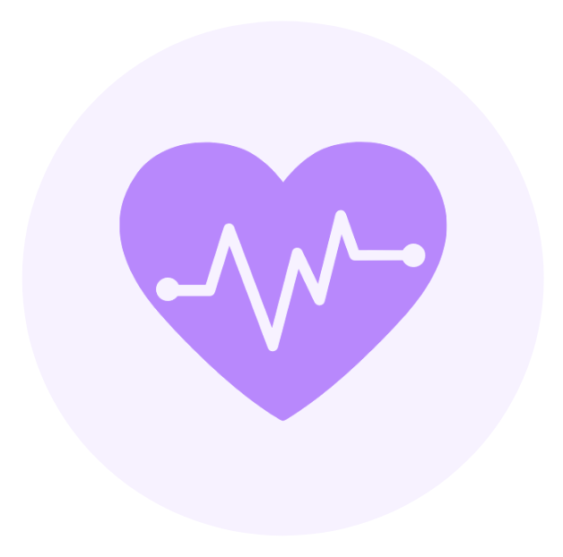

Il est parfois difficile de revenir à la vie normale après un séjour en cure. Pour vous aidez à récupérer votre indépendance, Stop Addict vous accompagne dans votre vie quotidienne. Discrète et compacte, vous êtes libre d'utiliser la plateforme selon vos besoins.
L'application est suivi par de nombreux profesionnels de santé. Par conséquent, nous sommes disposés à vous assister lors de période difficile. Accèdez à des conseils et encouragements sur votre page profil.
En cas de problèmes graves ou mineurs, l'équipe Stop Addict peut vous rediriger vers des profesionnels qui seront répondre à vos difficultés. Le service est gratuit 24h/24 et 7j/7. Renseignez-vous dans la rubrique Aide.
La communauté autour de Stop Addict est autant d'individus ayant eu, ou se confrontant encore aux difficultés que vous pouvez subir. N'hésitez pas à vos posez vos questions, ensemble nous y arriverons.
Nous savons les efforts nécessaire pour arriver à termes à vos objectifs. Nous souhaitons vous accompagner tout au long de ce processus avec bienvaillance et respect de votre vie privée.